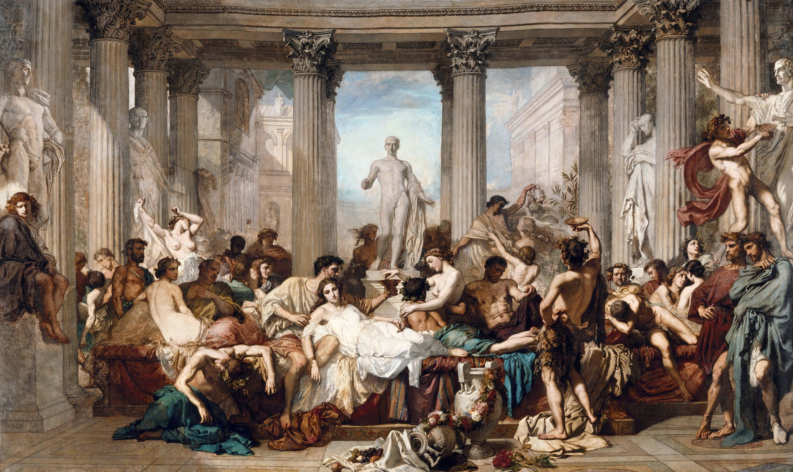

Αδύνατο vs Απίθανο - Μέρος Βʹ#

Ο πίνακας Η παρακμή των Ρωμαίων του Thomas Couture.#
Την προηγούμενη Κυριακή ξεκινήσαμε μία συζήτηση σε σχέση με το αν υπάρχουν διαφορές ανάμεσα σε αυτό που λέμε «απίθανο» και αυτό που λέμε «αδύνατο» - δείτε εδώ για περισσότερα. Η συζήτηση αυτή αποκάλυψε την ανάγκη να καθορίσουμε πρώτα αυστηρά την έννοια του ενδεχομένου καθώς και την έννοια της πιθανότητας - αν και, ακόμα, λίγο αφηρημένα. Πριν περάσουμε σε πιο ζουμερές λεπτομέρειες που θα δώσουν απάντηση στην ερώτησή μας για το αν υπάρχει τελικά διαφορά ανάμεσα στα απίθανα και τα αδύνατα της ζωής, ας φρεσκάρουμε λίγο τη μνήμη μας.
Μία υπενθύμιση στα γρήγορα#
Αρχικά, μιλώντας για ενδεχόμενα, την προηγούμενη εβδομάδα καταλήξαμε στον ακόλουθο ορισμό:
Η έννοια της σ-άλγεβρας, όπως είχαμε αναφέρει, ανταποκρίνεται σε ικανοποιητικό βαθμό σε αυτό που έχουμε στον νου μας ως ενδεχόμενο και στις πράξεις που θα θέλαμε να κάνουμε με αυτά. Για την ακρίβεια, όλες οι τυπικές πράξεις μεταξύ ενδεχομένων μας δίνουν πάλι ενδεχόμενα ως αποτέλεσμα, ακόμα κι αν τις εφαρμόσουμε (αριθμήσιμα) άπειρες στο πλήθος φορές.
Έχοντας καθορίσει τι είναι τα ενδεχόμενά μας σε ένα γενικό πείραμα τύχης, έπειτα καθορίσαμε τις προδιαγραφές που πρέπει να πληροί κάθε συνάρτηση που φιλοδοξεί να αποτιμήσει για εμάς την πιθανότητα ενός ενδεχομένου. Ειδικότερα, δώσαμε και τον ακόλουθο ορισμό:
Τη δεύτερη ιδιότητα κάθε μέτρου πιθανότητας συχνά την αποκαλούμε και σ-προσθετικότητα.
Τώρα, με τη βοήθεια των παραπάνω δύο βασικών εργαλείων πρέπει να εξερευνήσουμε τις διαφορές - αν υπάρχουν - ανάμεσα σε αυτό που λέμε «απίθανο» και σε αυτό που λέμε «αδύνατο».
Μία πεπερασμένη περίπτωση…#
Ας δώσουμε, αρχικά, δύο απλούς και λογικούς ορισμούς για το τι είναι αδύνατο και τι απίθανο:
Αδύνατο είναι αυτό που δεν είναι εφικτό να συμβεί με κανέναν τρόπο - δηλαδή, δεν συμβαίνει, ποτέ, αιτιοκρατικά μιλώντας, χωρίς να υπόκειται σε κάποια τυχαιότητα.
Απίθανο είναι αυτό του οποίου η πιθανότητα να συμβεί είναι 0 - για παράδειγμα, το κενό ενδεχόμενο.
Στην περίπτωση του κενού ενδεχομένου, οι έννοιες του αδυνάτου και του απίθανου συμπίπτουν αρκετά, καθώς πράγματι, το κενό ενδεχόμενο είναι… κενό - και άρα αδύνατο να συμβεί. Γενικότερα, μπορούμε να πούμε ότι ισχύει η εξής συνεπαγωγή:
Αδύνατο \(\Rightarrow\) Απίθανο.
Δηλαδή, αν κάτι δε γίνεται να συμβεί, τότε η πιθανότητα να συμβεί θα είναι σαφώς μηδενική - μεγάλη σοφία είπαμε πάλι. Τώρα, όπως κάνουμε για κάθε συνεπαγωγή στα μαθηματικά, θα αναρωτηθούμε δικαίως: «Ισχύει το αντίστροφο;». Δηλαδή, αν κάτι είναι απίθανο να συμβεί, τότε σημαίνει κι ό,τι δε θα συμβεί;
Έχοντας δώσει τους παραπάνω ορισμούς, το ερώτημα αν τα απίθανα πράγματα σε αυτή τη ζωή είναι όλα τους και αδύνατα ανάγεται στο απλώς να καθορίσουμε τι είναι απίθανο ή, πιο απλά, ποια ενδεχόμενα σε κάθε περίπτωση είναι αυτά που έχουν πιθανότητα 0. Αυτό, με τη σειρά του, ανάγεται στο να περιγράψουμε καλά ένα μέτρο πιθανότητας για διάφορες περιπτώσεις πειραμάτων τύχης. Όμως, πειράματα τύχης υπάρχουν πολλά, από ποια να ξεκινήσουμε;
Η απάντηση είναι σχετικά απλή: από αυτά που έχουν πεπερασμένα στο πλήθος ενδεχόμενα - και άρα αφορούν κι έναν πεπερασμένο δειγματικό χώρο, \(\Omega\) , όπως λέμε. Έστω, λοιπόν \(\Omega=\{1,2,\ldots,n\}\) ένα πεπερασμένο σύνολο. Για συντομία, σε όλα τα παρακάτω, αντί να γράφουμε \(\{1,2,\ldots,n\}\) θα γράφουμε \([n].\) Θέλουμε, λοιπόν, να καθορίσουμε ένα μέτρο πιθανότητας στο \([n]\) που να ανταποκρίνεται στη συνήθη θεώρησή μας για το τυχαίο σε πεπερασμένα πειράματα τύχης - όπως το στρίψιμο ενός νομίσματος ή η ρίψη ενός ζαριού. Αυτή η συνήθης θεώρηση είναι ότι όλα τα «απλά» ενδεχόμενα είναι ισοπίθανα. Τώρα, ως απλά ενδεχόμενα είναι λογικό, φυσικό και αναμενόμενο να θεωρούμε τα μονοσύνολα - το απλούστερο στοιχείο που θα θέλαμε να περιλαμβάνει μία εύλογη σ-άλγεβρα σε αυτήν την περίπτωση.
Εδώ να κάνουμε μία κομβικής σημασίας παρατήρηση. Το να περιγράψουμε καλά ένα μέτρο πιθανότητας θα πηγαίνει πάντοτε χέρι-χέρι με το να καθορίσουμε και την αντίστοιχη σ-άλγεβρα που θα αποτελεί και το πεδίο ορισμού του. Αυτό είναι απόλυτα φυσιολογικό καθώς, όπως θα φανεί και στην πορεία, ο τρόπος με τον οποίο αποφασίζουμε να αποτιμούμε το τυχαίο είναι άρρηκτα συνυφασμένος με το τι μπορούμε να θεωρήσουμε ως ενδεχόμενο - δηλαδή ως κάτι που μπορούμε να αποτιμήσουμε πόσο τυχαίο είναι.
Συνεχίζοντας, τώρα, σε ένα απλό πεπερασμένο πείραμα τύχης, θα θέλαμε όλα τα απλά ενδεχόμενα να έχουν την ίδια πιθανότητα, με άλλα λόγια, θέλουμε:
Τώρα, δεδομένου και ότι:
από τον ορισμό ενός μέτρου πιθανότητας, έπεται ότι:
Επομένως, η απαίτησή μας εδώ είναι όλα τα μονοσύνολα να έχουν πιθανότητα \(\frac{1}{n}.\) Μένει τώρα να δούμε αν μπορούμε να περιγράψουμε ένα μέτρο πιθανότητας με αυτήν την ιδιότητα. Άμεσα, αν \(A=\{a_1,\ldots,a_k\}\subseteq[n]\) είναι ένα σύνολο με \(k\) στοιχεία, \(k=1,\ldots,n\) μπορούμε να δούμε ότι ισχύει το εξής:
Δηλαδή, κάθε ενδεχόμενο με \(k\) στοιχεία με βάση την υπόθεσή μας περί «ομοιμορφίας» της πιθανότητας των απλών ενδεχομένων, έχει πιθανότητα να συμβεί \(\frac{k}{n}.\) Κι αυτό ανταποκρίνεται πλήρως στη διαίσθησή μας, υπό την έννοια ότι, αν ρίξουμε ένα ζάρι - οπότε \(n=6\) - τότε το ενδεχόμενο να έρθει 2 ή 5 αναμένουμε να έχει πιθανότητα \(\frac{2}{6},\) ακριβώς όπως προβλέπεται και παραπάνω.
Γενικότερα, λοιπόν, μπορούμε να πούμε ότι ένα μέτρο πιθανότητας που ανταποκρίνεται στη διαίσθησή μας είναι αυτό που αποτιμά κάθε υποσύνολο \(A\) του \([n]\) με τον εξής τρόπο:
Το παραπάνω δεν είναι τίποτα άλλο από το σχετικό μέγεθος κάθε συνόλου - το πόσα στοιχεία περιέχει το σύνολο σε σχέση με το πόσα στοιχεία περιέχει ο δειγματικός μας χώρος. Μένει να δούμε αν όντως μία συνάρτηση με τις παραπάνω ιδιότητες είναι πράγματι κι ένα μέτρο πιθανότητας. Αυτό δεν είναι όμως δύσκολο να το διαπιστώσουμε αφού πράγματι έχουμε \(p(\varnothing)=0\) και \(p(\Omega)=1\) ενώ για κάθε ξένη ένωση \(\bigcup_{k=1}^\infty A_k\) ενδεχομένων έχουμε να παρατηρήσουμε τα εξής:
Αρχικά, το \(\infty\) είναι παραπλανητικό καθώς τα υποσύνολα του \([n]\) είναι πεπερασμένα στο πλήθο - \(2^n\) μάλιστα - οπότε έχουμε να κάνουμε με πεπερασμένο άθροισμα.
Αφού είναι ξένα ανά δύο και πεπερασμένα, τότε είναι άμεσο ότι η ένωσή τους θα περιέχει ακριβώς όσα στοιχεία περιέχουν όλα μαζί.
Από τα παραπάνω έπεται άμεσα και η σ-προσθετικότητα της \(p,\) οπότε πράγματι είναι ένα μέτρο πιθανότητας. Στα παραπάνω, παρατηρήστε ότι δε χρειάστηκε να κάνουμε καμία υπόθεση για τα ενδεχόμενά μας, επομένως η σ-άλγεβρα στην οποία ορίζεται το μέτρο πιθανότητάς μας είναι όλα τα υποσύνολα του \([n].\)
Όλα καλά μας πήγαν ως τώρα καθώς πήραμε τη διαίσθησή μας, την κάναμε μαθηματικά, και όλα δούλεψαν ρολόι. Βρήκαμε έναν απόλυτα λογικό τρόπο να περιγράψουμε με βάση τους όρους που καθορίσαμε την προηγούμενη εβδομάδα τόσο όλα τα ενδεχόμενα ενός πεπερασμένου πειράματος τύχης όσο και το πώς αποτιμάται ομοιόμορφα η πιθανότητα πάνω σε αυτά. Παρατηρήστε τώρα ότι στα παραπάνω ισχύει ότι:
επομένως, το μόνο απίθανο ενδεχόμενο είναι να είναι κάτι αδύνατο. Άρα, σε αυτό το πεπερασμένο πλαίσιο, κάθε τι που είναι απίθανο είναι και αδύνατο - και αντιστρόφως, σαφώς, όπως ισχύει πάντα.
Είναι όμως πάντα έτσι τα πράγματα;
Άπειρες δυσκολίες#
Ας πάρουμε τώρα την περίπτωση ενός άπειρου πειράματος τύχης ή, για να το πούμε πιο σωστά, ενός πειράματος τύχης που έχει έναν άπειρο δειγματικό χώρο. Αρχικά, να ξεκαθαρίσουμε ότι θα διαπραγματευτούμε αρχικά πειράματα τύχης τα οποία έχουνε έναν αριθμήσιμα άπειρο δειγματικό χώρο - κυρίως γιατί είναι το πιο απλό, δομικά, άπειρο. Για την ακρίβεια, σε όλα τα παρακάτω θα έχουμε κατά νου ότι το πείραμα τύχης που εκτελούμε είναι το εξής απλό: επιλέγουμε τυχαία έναν φυσικό αριθμό. Επομένως, ο δειγματικός μας χώρος είναι το σύνολο \(\mathbb{N}=\{0,1,\ldots\}\) και τα «απλά» μας ενδεχόμενα είναι τα μονοσύνολα φυσικών αριθμών. Εδώ, αν και θα το θέλαμε πολύ, μία απαίτηση ομοιομορφίας της μορφής:
είναι «παράλογη» υπό την έννοια ότι πρέπει να ισχύει και το εξής:
Επομένως, η μόνη επιλογή που έχουμε έτσι ώστε το παραπάνω άπειρο άθροισμα να συγκλίνει και να μην απειρίζεται είναι \(p(\{k\})=0,\) όμως σε αυτήν την περίπτωση έπεται ότι:
που αμέσως καθιστά την \(p\) μία συνάρτηση που δεν είναι μέτρο πιθανότητας.
Επομένως, τι μπορούμε να κάνουμε σε αυτήν την περίπτωση; Πώς θα αποτιμούσαμε την έννοια της πιθανότητας στο παραπάνω απλό πείραμα τύχης;
Λοιπόν, ας σκεφτούμε για αρχή αν το 0 που βρήκαμε παραπάνω γενικεύει κάτι που είχαμε βρει και πριν. Αν το καλοσκεφτούμε, πριν ασχοληθήκαμε με περιπτώσεις όπου \(\Omega=[n]\) ενώ τώρα κοιτάμε την περίπτωση \(\Omega=\mathbb{N}.\) Αν χρησιμοποιήσουμε λίγο καταχρηστικά τον συμβολισμό του ορίου για να αποτυπώσουμε τη διαίσθησή μας, μπορούμε να δούμε την περίπτωση να έχουμε ως δειγματικό χώρο όλους τους φυσικούς αριθμούς ως μία οριακή περίπτωση των παραπάνω ως εξής:
Έτσι, στην ουσία, θα αναμέναμε πολλά πράγματα που θα κάνουμε στην περίπτωση που έχουμε να διαλέξουμε τυχαία έναν φυσικό αριθμό να εκφράζονται μέσα από όρια. Για παράδειγμα, με το παραπάνω σκεπτικό, μπορούμε σχετικά φυσιολογικά να εξηγήσουμε γιατί \(p(\{k\})=0.\) Πράγματι, γενικά, για κάθε μονοσύνολο και για κάθε \(n\geq k\) ισχύει ότι:
αν θεωρήσουμε ως δειγματικό μας χώρο το \([n].\) Αφήνοντας το \(n\) να μεγαλώσει αυθαίρετα πολύ παίρνουμε:
το οποίο συμπίπτει με αυτό που βρήκαμε και πιο αυστηρά παραπάνω - ότι η πιθανότητα κάθε μονοσυνόλου είναι μηδενική αν θεωρήσουμε ως δειγματικό μας χώρο το \(\mathbb{N}.\)
Φαίνεται, λοιπόν, αυτή η μετάβαση από το πεπερασμένο στο άπειρο μέσω των ορίων να δουλεύει. Πρέπει όμως να την περιγράψουμε πιο αυστηρά, γιατί στα παραπάνω κάναμε αρκετές παρασπονδίες σε σχέση με τον μαθηματικό φορμαλισμό. Αρχικά, μπορούμε να πούμε λίγο πιο αυστηρά ότι αν \(A\subseteq\mathbb{N}\) τότε θα ορίζουμε την πιθανότητά του να είναι το εξής όριο:
όταν το παραπάνω όριο υπάρχει. Αρχικά, αυτός ο περιορισμός «όταν το παραπάνω όριο υπάρχει» σημαίνει ότι ίσως η σ-άλγεβρα που θα καταλήξουμε να έχουμε να μην συμπεριλαμβάνει όλα τα υποσύνολα των φυσικών αριθμών, αλλά ας το αφήσουμε για πιο μετά αυτό. Αφετέρου, ο παραπάνω ορισμός είναι στην ουσία μία πιο φορμαλιστική αποτύπωση των όσων συζητήσαμε παραπάνω. Αυτό που κάνουμε είναι να παίρνουμε ένα σύνολο και να κοιτάμε διαδοχικά τα πεπερασμένα «στιγμιότυπά» του, υπολογίζοντας την πιθανότητα αυτών και παίρνοντας, τελικά, το όριό τους. Έτσι, έχουμε τα εξής:
\(p(\varnothing)=0\) αφού \(\varnothing\cap[n]=\varnothing\)
\(p(\mathbb{N})=1\) αφού \(\mathbb{N}\cap[n]=[n]\)
Επίσης, για παράδειγμα, αν \(A\) είναι το σύνολο όλων των άρτιων φυσικών αριθμών, τότε παρατηρούμε ότι:
αν \(n\) άρτιος, τότε \(A\cap[n]=\{0,2,\ldots,n\}\) και άρα \(\dfrac{\#(A\cap[n])}{n}=\dfrac{\frac{n}{2}+1}{n}=\dfrac{n+2}{2n},\)
αν \(n\) περιττός, τότε \(A\cap[n]=\{0,2,\ldots,n-1\}\) και άρα \(\dfrac{\#(A\cap[n])}{[n]}=\dfrac{\frac{n-1}{2}+1}{n}=\dfrac{n+1}{2n}.\)
Σε κάθε περίπτωση, καθώς \(n\to\infty\) οι παραπάνω ποσότητες συγκλίνουν στο \(\frac{1}{2},\) επομένως έχουμε \(p(A)=\frac{1}{2},\) δηλαδή η «πιθανότητα» ένας τυχαία διαλεγμένος αριθμός να είναι άρτιος είναι 50%, όπως και θα θέλαμε.
Βάλαμε εισαγωγικά στη λέξη πιθανότητα παραπάνω καθώς δεν έχουμε αποδείξει αυστηρά ότι η εν λόγω συνάρτηση είναι ένα μέτρο πιθανότητας αλλά ούτε και έχουμε αποδείξει ότι τα ενδεχόμενα που ικανοποιούν την παραπάνω σχέση σχηματίζουν όλα μαζί μία σ-άλγεβρα. Έστω, λοιπόν, \(\mathcal{A}\) η συλλογή όλων των υποσυνόλων των φυσικών αριθμών για τα οποία το παραπάνω όριο υπάρχει και είναι πραγματικός αριθμός. Όπως είδαμε παραπάνω, \(\varnothing,\mathbb{N}\in\mathcal{A}.\) Επίσης, αν \(A\in\mathcal{A}\) τότε μπορούμε να αποδείξουμε ότι και το συμπλήρωμά του ανήκει στην \(\mathcal{A}\) καθώς:
και άρα:
Διαιρώντας με $atex n$ και παίρνοντας όρια στην παραπάνω σχέση εύκολα διαπιστώνουμε ότι:
επομένως, πράγματι το \(\mathbb{N}\setminus A\in\mathcal{A}\) και μάλιστα ικανοποιεί και φυσιολογικά την παραπάνω σχέση.
Μένει τώρα να αποδείξουμε ότι η παραπάνω συλλογή από σύνολα είναι και κλειστή ως προς τις τομές για να αποδείξουμε ότι είναι μία σ-άλγεβρα - και έτσι να έχουμε μία καλή περιγραφή των συνόλων που μπορούμε να μιλήσουμε για πιθανότητα. Ωστόσο, πριν το κάνουμε αυτό θα εξερευνήσουμε λίγο τα όρια της συλλογής \(\mathcal{A}.\) Όπως είπαμε, ενδέχεται αυτή να μην περιλαμβάνει όλα τα υποσύνολα των φυσικών αριθμών, οπότε και σε αυτήν την περίπτωση θα είχε νόημα να αναρωτηθούμε το εξής:
Ποια υποσύνολα των φυσικών αριθμών είναι αρκετά «άσχημα» έτσι ώστε το παραπάνω όριο να μην υπάρχει;
Για να απαντήσουμε αυτήν την ερώτηση πρέπει να καθορίσουμε τι είναι το «άσχημο» στην περίστασή μας. Λοιπόν, εμείς αναζητούμε ένα σύνολο έτσι ώστε να μην υπάρχει το όριο:
Τώρα, δεδομένου ότι παραπάνω εμφανίζονται αρχικά τμήματα του συνόλου \(A,\) θα θέλαμε ένα σύνολο που να έχει αρκετά ακανόνιστή συμπεριφορά, έτσι ώστε κάποια αρχικά του τμήματα να είναι σχετικά μεγάλα στο \([n]\) και κάποια άλλα να είναι σχετικά μικρά στο \([n].\) Για να το πετύχουμε αυτό, μπορούμε να φανταστούμε το σύνολο \(A\) ως έναν χρωματισμό των φυσικών αριθμών. Έτσι, για παράδειγμα, θα θέλαμε ανά διαστήματα να είναι έντονα χρωματισμένοι πολλοί φυσικοί αριθμοί και μετά, για ένα μεγάλο διάστημα, να μην είναι χρωματισμένος κανένας φυσικός αριθμός. Με άλλα λόγια, θα θέλαμε το \(A\) να παρουσιάζει πυκνώματα και αραιώματα - και να είναι άπειρο, μιας και για κάθε πεπερασμένο σύνολο ισχύει \(p(A)=0,\) όπως μπορείτε να δείτε.
Με βάση τα παραπάνω, ας πάρουμε το εξής σύνολο:
Ωραία…
Λοιπόν, το παραπάνω είναι το σύνολο όλων των αρτίων που βρίσκονται στην παρακάτω ένωση:
Δηλάδή, παίρνουμε τους φυσικούς, τους κόβουμε όπως τους κόβουν οι δυνάμεις του 2 και μετά κρατάμε τα «μισά» από τα διαστήματα που προκύπτουν - όπως φαίνεται παραπάνω. Έπειτα, διαλέγουμε όλους τους άρτιους που βρίσκονται σε αυτά τα διαστήματα.
Ας παρατηρήσουμε, για αρχή, ότι το παραπάνω σύνολο έχει αυτή τη δομή «ακανόνιστών» αραιωμάτων και πυκνωμάτων που θα θέλαμε, καθώς για ένα διάστημα μήκους \(2^{n}\) περιέχει όλους τους άρτιους και για το αμέσως επόμενο διάστημα μήκους \(2^m\) δεν περιέχει τίποτα. Επομένως είναι κατά τόπους πυκνό και κατά τόπους αραιό - «άδειο». Τώρα, ας θεωρήσουμε την ακολουθία:
Αυτό που θέλουμε να εξετάσουμε είναι αν το όριο της παραπάνω ακολουθίας υπάρχει. Ας παρατηρήσουμε ότι για \(n=2^{2k+1}\) - δηλαδή αν σταματήσουμε ακριβώς αφού έχει τελειώσει το $laetx k-$οστό πύκνωμα - έχουμε:
Ωραία, τώρα πρέπει να υπολογίσουμε το άθροισμα του αριθμητή. Αρχικά, ας παρατηρήσουμε ότι το παραπάνω άθροισμα συνοπτικά γράφεται ως:
Επομένως, έχουμε \(k\) άσσους που μπορούμε να βγάλουμε έξω από το άθροισμα και να το γράψουμε έτσι:
Εδώ αναγνωρίζουμε ένα απλό γεωμετρικό άθροισμα, οπότε έχουμε:
Αντικαθιστώντας παραπάνω έχουμε:
Τώρα, για το παραπάνω, έχουμε εύκολα το εξής:
Από την άλλη τώρα, θεωρούμε την υπακολουθία που αντιστοιχεί στο να σταματήσουμε ακριβώς πριν το \(k-\) οστό πύκνωμα:
Με ανάλογο τρόπο μπορούμε να δείξουμε ότι \(a_{2^{2k}-1}\to\frac{1}{3},\) οπότε και η ακολουθία \(a_n\) δε συγκλίνει, άρα πράγματι καταφέραμε να βρούμε ένα σύνολο, το \(A\) που να μην ανήκει στην \(\mathcal{A}.\) Για να αποφύγουμε όποια σύγχυση με τα επόμενα, το παραπάνω σύνολο θα το συμβολίζουμε με \(A^*.\)
Αυτό έχει άμεσες συνέπειες στο αν η \(\mathcal{A}\) είναι ή όχι σ-άλγεβρα. Όπως είπαμε και παραπάνω, μας λείπει μόνο η κλειστότητα ως προς τις τομές. Όπως θα δούμε παρακάτω, μπορούμε να βρούμε δύο σύνολα που να ανήκουν στην \(\mathcal{A}\) αλλά που η τομή τους δε θα ανήκει στην \(\mathcal{A}\) - θα είναι το \(A^*\) για την ακρίβεια. Αρχικά, επιλέγουμε ως \(A\) το σύνολο όλων των ρητών, το οποίο ανήκει στη σ-άλγεβρά μας. Το δεύτερο σύνολό μας θα είναι το σύνολο \(B\) το οποίο ορίζεται ως εξής:
όπου το \(B^*\) είναι το σύνολο όλων των περιττών αριθμών που περιέχονται στην εξής ένωση:
Με άλλα λόγια, το \(B\) είναι το σύνολο που από την ένωση:
περιέχει μόνο τους άρτιους αριθμούς κι από την ένωση:
περιέχει μόνο τους περιττούς. Μπορούμε με τεχνάσματα όπως αυτά που κάναμε παραπάνω να αποδείξουμε ότι έχει μέτρο πιθανότητας \(p(B)=\frac{1}{2}\) αλλά μία διαισθητική «απόδειξη» εδώ έχει πολύ περισσότερη αξία. Ουσιαστικά, οι δύο ξένες ενώσεις που έχουμε παραπάνω είναι μία «διαμέριση» των φυσικών αριθμών. Βάλαμε εισαγωγικά γιατί έχουν κοινά σημεία - όλες τις δυνάμεις του δύο - αλλά αυτό δε θα μας επηρεάσει παρακάτω, και θα τις σκεφτόμαστε ως διαμερίσεις. Επίσης, οι δύο ξένες ενώσεις μοιάζουν αρκετά ως προς τη δομή, οπότε θα σκεφτόμαστε διαισθητικά ότι καθεμιά τους αντιστοιχεί στους «μισούς» φυσικούς αριθμούς περίπου. Τώρα, αν σκεφτούμε ότι από το ένα μισό παίρνουμε το «μισό» - μόνο τους άρτιους - κι από το άλλο και πάλι μόνο το «μισό» - μόνο τους περιττούς - τότε μας έμειναν δύο τέταρτα των φυσικών αριθμών, δηλαδή οι «μισοί» φυσικοί αριθμοί. Επομένως, πράγματι, έχουμε \(p(B)=\frac{1}{2}\) και άρα \(B\in\mathcal{A}.\)
Ωστόσο, εύκολα βλέπουμε ότι \(A\cap B=A^*,\) επομένως η τομή των δύο συνόλων δεν ανήκει στην \(\mathcal{A},\) άρα δεν είναι σ-άλγεβρα! Συνεπώς, έχουμε μείνει στα χέρια μας με μία κλάση συνόλων που δεν είναι σ-άλγεβρα αλλά «μοιάζει» αρκετά και με μία συνάρτηση που δεν είναι μέτρο πιθανότητας - αφού δεν ορίζεται σε μία σ-άλγεβρα - αλλά «μοιάζει» αρκετά. Και τι θα κάνουμε τώρα;
Βασικά, τίποτα, καθώς ήδη έχουμε αποδείξει ότι δεν μπορούμε να κάνουμε κάτι καλύτερο. Πράγματι, αρχικά δείξαμε ότι την τετριμμένη υπόθεση να έχουν όλα τα μονοσύνολα την ίδια πιθανότητα δεν μπορούμε να την υποστηρίξουμε καθώς τότε θα έπρεπε και όλος μας ο δειγματικός χώρος να έχει πιθανότητα 0, πράγμα που δεν μας εξυπηρετεί. Έπειτα, η παραπάνω κομψή γενίκευση των όσων έχουμε δει σε πεπερασμένους δειγματικούς χώρους μας πήγε λίγο παρακάτω, αλλά όχι αρκετά έτσι ώστε να βρούμε ένα ομοιόμορφο μέτρο πιθανότητας στους φυσικούς αριθμούς. Ωστόσο, η παραπάνω προσέγγιση μας έδωσε ένα καλό εργαλείο ενός «περίπου» μέτρου πιθανότητας που, στην πράξη είναι ιδιαίτερα χρήσιμο.
Το επόμενο βήμα μας είναι να δούμε τι είναι αυτό που μας εμποδίζει να μετρήσουμε πιθανότητες φυσιολογικά στους φυσικούς αριθμούς. Αν και ίσως λίγο αναπάντεχο, είναι η ιδιότητα της σ-προσθετικότητας του μέτρου πιθανότητας. Πράγματι, αυτή ακριβώς η ιδιότητα είναι που μας επιτρέπει να αποδείξουμε ότι στην περίπτωση που όλα τα μονοσύνολα έχουν την ίδια πιθανότητα να προκύψουν - που αυτή είναι αναγκαστικά 0 λόγω της απειρίας τους - τότε θα πρέπει και \(p(\mathbb{N})=0,\) που είναι άτοπο. Αν, αντιθέτως, το μέτρο μας ήταν πεπερασμένα προσθετικό και ορισμένο όχι σε μία σ-άλγεβρα αλλά σε μία απλή άλγεβρα - δείτε εδώ για να θυμηθείτε τον ορισμό της άλγεβρας - τότε δε θα μπορούσαμε να αποδείξουμε ότι \(p(\mathbb{N})=0.\) Αντιθέτως, αν και δε θα το κάνουμε, σε αυτήν την περίπτωση μπορούμε να βρούμε ένα πεπερασμένα προσθετικό μέτρο πιθανότητας που να είναι μία γνήσια επέκταση του \(p,\) ορισμένο σε όλα τα υποσύνολα των φυσικών αριθμών. Αλλά, όταν κάτι παίρνουμε, κάτι άλλο χάνουμε - και σε αυτήν την περίπτωση είναι όλα τα καλά που μας δίνει η σ-προσθετικότητα και σχετίζονται με όρια, σειρές και, γενικά, πράξεις με άπειρες οντότητες.
Όπως και να έχει, από τα παραπάνω έχουμε να κρατήσουμε ένα πολύ σημαντικό συμπέρασμα. Είτε μιλάμε για ένα σ-προσθετικό «περίπου» μέτρο πιθανότητας είτε για ένα πεπερασμένα προσθετικό μέτρο πιθανότητας, ισχύουν τα εξής:
\(p(\{n\})=0\) για κάθε \(n\in\mathbb{N}\) και,
\(p(A)=0\) για κάθε πεπερασμένο σύνολο φυσικών αριθμών \(A.\)
Το τελευταίο έπεται εύκολα από την προσθετικότητα του μέτρου μας - όποιο κι αν είναι αυτό. Επομένως, στην περίπτωση που ο δειγματικός μας χώρος είναι οι φυσικοί αριθμοί και μιλάμε για ένα ομοιόμορφο μέτρο πιθανότητας - δηλαδή για μία συνάρτηση που στα «απλά» ενδεχόμενα αποδίδει την ίδια πιθανότητα - έχουμε ενδεχόμενα που δεν είναι αδύνατα - όπως π.χ. το ενδεχόμενο \(\{4\}\) - αλλά είναι απίθανα!
Τελικά Απίθανο ≠ Αδύνατο;#
Από τα παραπάνω συμπεραίνουμε εύκολα ότι τελικά αυτό που λέμε απίθανο δε συμπίπτει στη γενική περίπτωση με αυτό που λέμε αδύνατο. Διότι, αν έχουμε ένα αρκετά περίπλοκο πείραμα τύχης - με όχι πεπερασμένο δειγματικό χώρο - μπορούμε σχετικά απλά να δούμε πώς υπάρχουν απλά ενδεχόμενα που ενώ έχουν μηδεινκή πιθανότητα να συμβούν, δεν είναι αδύνατο και να συμβούν. Για παράδειγμα, αν σας ζητήσουν να διαλέξετε έναν φυσικό αριθμό στην τύχη κι εσείς διαλέγετε, για παράδειγμα, το 7, τότε, ενώ το \(p(\{7\})=0,\) δηλαδή το ενδεχόμενο να διαλέξετε το 7 είναι απίθανο, τελικά το διαλέξατε. Επομένως, πράγματι, απίθανο, αλλά όχι αδύνατο.
Γενικότερα, η έννοια του απίθανου είναι πιο «ελαστική» καθώς περιλαμβάνει όλα αυτά τα ενδεχόμενα που εκτιμούμε ότι συμβαίνουν το ίδιο σπάνια με το κενό (αδύνατο) ενδεχόμενο, με μία σημαντική οντολογική διαφορά: συμβαίνουν.
Εδώ θα έλεγε κανείς ότι έχουμε τελειώσει, ωστόσο μπορούμε να σκεφτούμε και το εξής. Η αποτίμηση της πιθανότητας ενός ενδεχομένου, τελικά, ανάγεται σε μία διαδικασία, κατά κάποιον τρόπο, μέτρησης - εξ ου και ο όρος «μέτρο πιθανότητας». Όμως, όπως γνωρίζουμε, υπάρχουν πράγματα που μπορούμε να μετρήσουμε και πράγματα που δεν μπορούμε να μετρήσουμε. Ισχύει άραγε κάτι ανάλογο και με τις πιθανότητες; Υπάρχουν, δηλαδή, τόσο πολύλποκα ενδεχόμενα - δομικά πολύπλοκα - που να μην μπορούμε με κάποιον συνεπή με τη διαίσθησή μας τρόπο να τα μετρήσουμε; Δηλαδή, εκτός από πιθανά κι απίθανα, υπάρχουν και πράγματα που δεν είναι ούτε πιθανά ούτε απίθανα;
Για όλα τα παραπάνω θα μιλήσουμε την επόμενη εβδομάδα! Μέχρι τότε, καλό βράδυ!